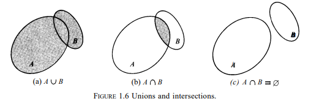

"이제 나는
어떠한 저항도 하지 않기로 결심했다."
1914년 8월 26일, 비트겐슈타인.
논리학
수학
물리학
전산학
컴퓨터공학
매체학
음악
철학
주어진 집합 $S$로 새로운 집합을 형성할 수 있다.
이는 $S$의 부분집합(subset)이다.
가령, 4로 나눌 수 있는 10 미만의 양의 정수로 구성된 집합은 10 미만의 모든 정수의 집합의 부분집합이다.
일반화하면, 우리는 다음 정의를 갖는다.
부분집합 정의
집합 $A$의 모든 원소가 집합 $B$에도 속하면 $A$는 $B$의 부분집합이고, 다음처럼 적는다.
$$ A \subseteq B.$$
$A$가 $B$에 포함된다(contained)거나 $B$가 $A$를 포함한다(contain)고 말하기도 한다.
$\subseteq$ 관계는 집합 포함을 가리킨다.
$A \subseteq B$는 $B \subseteq A$의 가능성을 파기하지 않는다.
실은, $A \subseteq B$인 동시에 $B \subseteq A$일 수도 있다.
$A$와 $B$가 같은 원소를 가질 때만 일어나는 일이다.
달리 말하면 다음과 같다.
$$ A = B\;if\;and\;only\;if\;A\subseteq B,\;and\; B\subseteq A.$$
이 정리는 앞선 상등 정의 직접적인 귀결이다.
만약 $A \subseteq B$인데 $A \neq B$라면 $A$는 $B$의 진부분집합(proper subset)이다.
$A\subset B$라고 표기한다.
지금껏 $S$를 이미 주어진 것으로 가정했다.
우리의 관심사는 오직 이 주어진 집합의 부분집합이다.
집합 $S$는 적용 방식에 따라 차이를 보일 것이다.
곧 $S$는 특정 논의 각각에서 전체집합(universal set)을 지시할 것이다.
아래 표기법은 속성 $P$를 만족하는 $S$의 모든 원소 $x$를 가리킨다.
$$\left \{x \mid x\in S\;and\;x\;satisfies\;P \right \}. $$
전체집합이 파악된다면, $S$와 $and$를 생략해 $\left \{x \mid x\;satisfies\;P \right \}$라고 간단하게 적는다.
"$P$를 만족하는 모든 $x$의 집합"이라고 읽으면 된다.
이렇게 표기된 집합은 속성 정의로 묘사된다.
가령, 모든 양의 실수의 집합은 $\left \{x \mid x>0 \right \}$으로 표기된다.
여기서 전체집합 $S$는 실수 전체의 집합으로 파악된다.
유사하게, 모든 양의 짝수 정수의 집합 $\left \{2,4,6,\ldots \right \}$은 $\left \{x \mid x\;is\;a\;positive\;integer \right \}$이라고 표기된다.
물론 문자 $x$는 아무 편한 기호로 대체될 수 있다.
따라서 우리는 다음처럼 쓸 수도 있다.
$$\left \{x \mid x > 0 \right \}= \left \{y \mid y >0 \right \} = \left \{ t \mid t >0 \right \}.$$
원소를 포함하지 않는 집합 또한 가능하다.
바로 공집합(empty set, void set)이다.
$\varnothing$ 기호로 표기한다.
우리는 $\varnothing$을 모든 집합의 부분집합으로 간주할 것이다.
혹자는 집합을 (가방이나 상자 같은) 컨테이너와 유비적으로 생각하는 것이 도움이 된다고 본다.
컨테이너는 어떤 객체, 자신의 원소를 포함(contain)한다.
공집합은 빈 컨테이너와 유비된다.
논리적 난항을 피하기 위해 원소 $x$와 원소가 $x$뿐인 집합 $\left \{x \right \}$를 구분해야 한다.
(모자가 든 상자는 개념적으로 모자 자체와 구분된다.)
공집합 $\varnothing$ 또한 $\left \{ \varnothing \right \}$과 같지 않다.
실상 공집합 $\varnothing$은 원소를 포함하지 않는다.
반면 $\left \{ \varnothing \right \}$은 $\varnothing$이라는 원소 하나를 포함한다.
(빈 상자를 포함하는 상자는 빈 상자가 아니다.)
정확히 하나의 원소를 포함하는 집합은 종종 한원소집합(one-element set)이라고 불린다.

집합 간의 관계를 파악할 때 다이어그램은 도움이 되기도 한다.
가령, 우리는 집합 $S$를 평면 위의 면적으로 보고 $S$의 원소를 점으로 볼 수도 있다.
이 경우 $S$의 부분집합은 $S$와 점들의 모임으로 생각될 수 있겠다.
가령 그림 1.6(b)에서 색칠된 부분은 집합 $A$의 부분집합인 동시에 $B$의 부분집합이다.
이런 유형의 시각 자료는 벤다이어그램(Venn diagrams)이다.
집합론의 정리가 갖는 타당성을 검증하거나 이를 증명하기 위한 방법을 떠올릴 때 용이하다.
물론, 증명 자체는 다이어그램이 아니라 개념 정의에만 근거해야 한다.